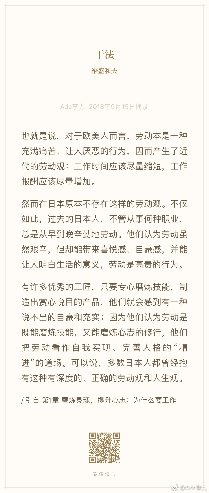

#读书#之前读过稻盛和夫的《活法》，这本《干法》阐述了同样思想，人生工作结果 = 思维方式 * 热情 * 能力。
这个公式有意思的是：
1，三个要素之间不是加法，是用乘法
2，热情就是努力。稻盛和夫把人分成自燃型，可燃型和不燃型，只有自燃型的人才会付出百分百努力。
3，能力和热情用打分制的话。从0到100都有。只有思维方式的打分，是从-100到+100，就是思维方式错了的话，越有能力，越努力，结果越差
4，能力和热情有天赋成分在里面。如果人生过半，最能改变的大约就是思维方式了。
稻盛和夫总结的日本人早期对工作的态度，以及他认可的思维方式，我倒觉得很中国传统知识分子对自己的要求很类似。这大约是东亚文化中的共性。
这个公式有意思的是：
1，三个要素之间不是加法，是用乘法
2，热情就是努力。稻盛和夫把人分成自燃型，可燃型和不燃型，只有自燃型的人才会付出百分百努力。
3，能力和热情用打分制的话。从0到100都有。只有思维方式的打分，是从-100到+100，就是思维方式错了的话，越有能力，越努力，结果越差
4，能力和热情有天赋成分在里面。如果人生过半，最能改变的大约就是思维方式了。
稻盛和夫总结的日本人早期对工作的态度，以及他认可的思维方式，我倒觉得很中国传统知识分子对自己的要求很类似。这大约是东亚文化中的共性。

- 